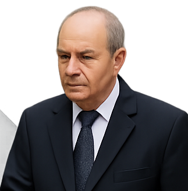

🧬🧬 Biography 🧬🧬
of Moungi
G. Bawendi


Name: Moungi Gabriel Bawendi
Date of Birth: March 15, 1961
Nationality: Tunisian, French, American
Profession: Chemist, Professor at MIT
Field: Quantum Dots, Nanotechnology
Nobel Prize: Chemistry, 2023
🎓 Early Life and Education
Moungi Bawendi was born in Paris, France, to a Tunisian father, Mohamed Salah Bawendi, a mathematics professor.
He spent his childhood between France, Tunisia, and later Indiana, USA, where he completed his high school education.
Undergraduate & Master’s: Harvard University (Chemistry)
PhD: University of Chicago (1988), under Karl Freed
Postdoctoral Research: Bell Laboratories, with Louis Brus
👨🔬 Academic Career
Bawendi joined the Massachusetts Institute of Technology (MIT) in the 1990s, where he is now a professor of chemistry and holds the Lester Wolfe Professorship.He is internationally recognized for:
- Developing methods for synthesizing quantum dots with precise control over their size and properties.
- Pioneering a method called “hot-injection synthesis” that revolutionized how nanocrystals are made.
🏆 Nobel Prize in Chemistry (2023)
In October 2023, Bawendi was awarded the Nobel Prize in Chemistry alongside Louis Brus and Alexei Ekimov. Reason:
- “For the discovery and development of quantum dots,”
which are tiny semiconductor particles with unique optical and electronic properties.
These are used in:
- Medical imaging
- LED and QLED display technology
- Solar cells and quantum computing research
- Although he built his career in the U.S., Bawendi is proud of his Tunisian heritage:
- He lived in Tunisia during his early childhood.
- He visited Tunisia after receiving the Nobel Prize and was honored by local universities and the government.
- In 2024, he received the Order of the Republic (Grand Officer), one of Tunisia's highest honors.
🇹🇳 Connection to Tunisia
💡 Personal Outlook
Bawendi once said he failed his first chemistry exam at Harvard but used it as motivation to improve.He emphasizes curiosity, perseverance, and passion for discovery as keys to scientific success.
He often mentors young scientists and shares advice about turning challenges into growth.